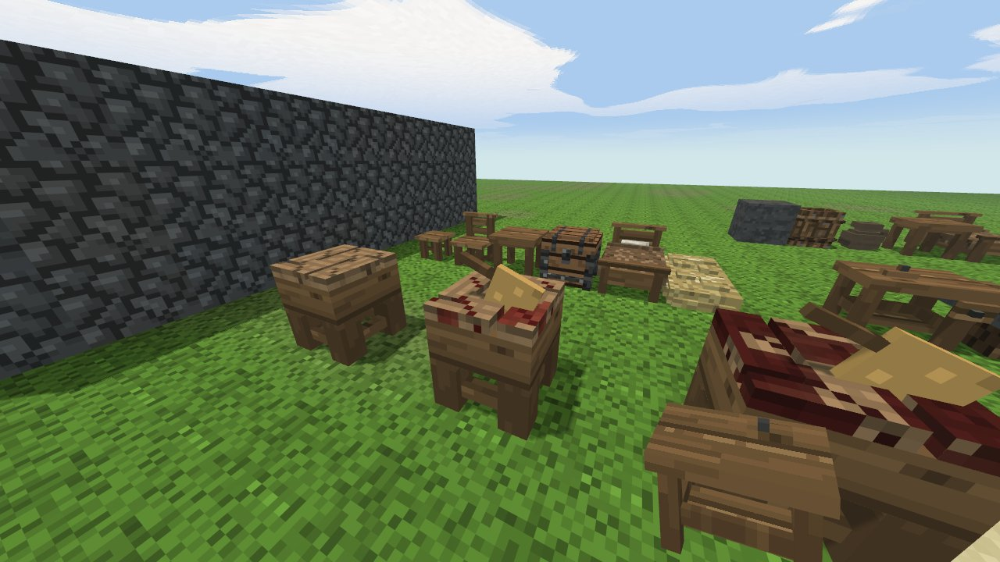
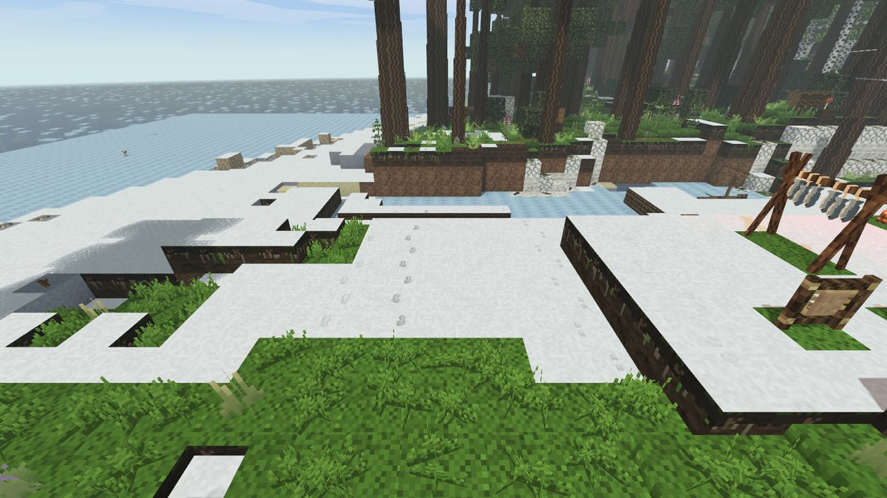

Animals and hunting
A boar is slower than a running player, so meeting one is a choice: fight or leave.
Who is dangerous
| Animal | How it behaves |
|---|---|
| Boar | Charges if you get close. Slower than you at a run, so you can leave. |
| Wolf | Packs of three to six. The pack circles about nine blocks out and rushes when you turn your back or are hurt. A lone wolf follows and attacks only the wounded. Stand with your back to a wall and keep them in front of you; a fire at night keeps them in the dark. |
| Bear | Only in forest. Holds its ground: walk into it and it comes for you. Faster than you once it gets going, but slow to start, and it gives up about twenty blocks from its den. |
| Lion | Only in savanna, mostly at night. Attacks if you come within five blocks or hit it. Slower than your sprint; back off the way you came. |
| Elk | North and bogs. A cow with a calf comes at you. |
| Snakes | Adders (zigzag back) bite within a block and a half; a cobra rears and spreads its hood first, and lets go of anyone who steps back; a python in palm groves and swamps grabs and squeezes. Grass snakes and rat snakes are harmless or nearly so. |
Everything else runs: hare, deer, sheep, birds, fox, antelope, zebra. A deer is faster than you and cannot be caught by running; it has to be stalked. A sheep is slower than a walking player.
How animals notice you
- Hearing goes through walls and leaves. A runner is heard twice as far as a walker, a creeper three times closer, someone standing still not at all. Digging and chopping carry further than running.
- Sight needs a straight line, light and the animal looking your way. Tall grass and bushes halve how far you are seen, and so does night; a burning torch at night makes you visible further than by day.
- Smell travels with the wind. Approach from downwind; watch which way the smoke leans.
A sound or scent at the edge of range makes an animal lift its head and look your way. That is your warning: stop. If you are still there at its next look, it goes. A grazing herd with heads down is the moment to close in. At midday animals lie in the shade, so a meadow at noon is empty and the forest edge is full.
Weapons
- Spears hit three times harder than a knife, whatever the head. A bone spear (bone + worked stick + cord) can be made on the first evening; a flint spear uses a knife head; copper, bronze and iron spears are forged at the kiln. A thrust takes a full second and lands 0.42 seconds after the click, so aim where the animal will be.
- Bow next update: 2 worked sticks + 2 sinew. Hold the right button to draw, let go to shoot; a longer draw (up to about a second) shoots further. After two seconds the aim starts to waver. Arrows: 2 heads + 1 stick + 2 feathers → 2 arrows. Arrows fly in an arc and drift with the wind; walk up to a stuck arrow to take it back.
- Throwing next update: hold Q and release to throw what is in your hand where you look. The longer you hold, the further, at full strength after one second. A short tap of Q just drops the item at your feet. Stones, flint, sticks, bones, knives and ingots can be thrown; logs, blocks and anything over about one and a half kilograms cannot. A thrown stone hits about like a fist.
- Shields next update sit in the belt; hold V to raise one. A raised shield only takes blows from the front.
Where a blow lands is where you were looking: a head hit hurts half again as much and can stun, a body hit makes the animal bleed, a leg hit makes it limp. Two toadstools rubbed on a spear poison it.
Butchering
A carcass gives meat only to a knife: right-click it with a knife, one cut per click, for hide, sinew, bones and meat. An axe or pick spoils the hide but gives the rest; a bare hand cuts nothing. Sinew is what binds every metal tool, so the hunt and the forge are tied together. A carcass left alone rots in about a day and a quarter, leaving the skeleton where it fell.
next update Every meat has its own picture. Hare meat is a long hind leg with a bone, bird meat a plucked drumstick, bear meat a dark marbled slab with fat along the side, wolf meat a lean dark fillet with sinews. The meat of deer, boar, sheep and the other big animals is still the one plain raw meat, and all cooked meat is still one.
next update Small animals are carried whole. A hare, a bird or a fox can be lifted off the ground whole: hit it with an empty hand (half a second), then press E, and it is a carcass in your pack, with its own picture: the animal on its side and, once skinned, skinned or plucked. Butcher it right there: take a knife in your pack and click the carcass with it. Each click makes the next cut (a hare takes four: hide, sinew, bone, meat) and the knife stays in your hand. The rules are the ground's: an axe tears the hide, a dull knife gives a smaller piece, what does not fit in the pack falls at your feet, and you cannot cut lying exhausted. A carcass ages in the pack like one on the ground (about a day and a quarter) and takes the age it had with it, so meat cut from an old carcass comes out just as stale. Deer, boar and beaver stay where they fall.
The butcher's table and the bronze cleaver next update
The butcher's table is one block: a half-block slab of end-grain oak on four legs, with four grooves cut into the top. You make it by hand: 2 logs + 2 planks + 6 pegs. A hare, a bird or a fox carried whole is laid on it with a plain right-click (as it can be laid on the ground) and keeps ageing from the age it had in the pack. Deer and boar do not go on it: they cannot be carried.
- Cutting on the table gives more. Every cut of meat gives a piece more: a hare gives two portions instead of one. A cleaver standing in the table splits the bone, and the bone gives more too.
- A poorly made knife (poor work) leaves a fifth of every cut that would give more than one piece on the bone, in the pack, on the ground and at the table alike. At the table it loses exactly the extra piece of a hare.
- The bronze cleaver is forged at the kiln: 2 bronze ingots + 1 worked stick + 2 sinew. It is not a knife: it tears hides like an axe and its edge lasts twice as long as a bronze knife's. Shift + right-click on the table with the cleaver in hand drives it into the table, where it stays; the same again, with anything in hand, takes it out. Only at the table: elsewhere Shift does what it did before. On a phone it is the CLEAVER action button. While the cleaver stands in the table and you hold a knife, the cleaver splits the bone and it is the cleaver that wears: the knife skins, the cleaver splits, and you do not change slot. A broken table drops its cleaver.
- Blood. Every carcass cut up on the table leaves one step of blood in the wood, and after three the table is soaked (blood in the grooves, then in patches, then all over). A soaked table is no longer furniture but filth nearby as far as comfort goes, and meat from it comes out one step of rot older. Wash it with a jug of water (right-click, the jug empties) or leave it in the rain if it stands under open sky.
- A clean table adds comfort, like the workshops.
- Your hands get dirty with every cut wherever you butcher: three hares is the threshold past which a dirty body is uncomfortable. Wash in a river.

Tracks next update
Everything that walks leaves prints on snow, sand, mud, bare earth and ash. Grass, stone, gravel and fallen leaves show nothing, so a trail that reaches a meadow is lost there and found again on the far side.
- Whose: a bare human foot shows toes, a boot shows a tread. Horses and zebras leave a round hoof; deer, elk, boar and sheep a split hoof; wolves, foxes, bears, hares and lions a pad and four toes; birds three toes. Size tells a horse from a sheep.
- Which way: the toe points where the animal went. Running tracks are stretched apart.
- How old: a fresh print is dark and crisp. It pales over time and is gone in about five minutes. Rain and snowfall wipe tracks three times faster, a storm five times.
To track, find the freshest print and follow its toe, each time picking the next, darker one. When the chain keeps getting darker, the animal is close. Tracks are not saved: after a restart the snow is clean.

Keeping sheep and boar
Only sheep and boar can be kept (and the horse, below). Hold what the animal eats and walk up slowly: a wild one within ten blocks comes to your hand; running scatters it.
- Sheep eat cut grass (fibre), hay, grain and millet. Boar eat berries, mushrooms, roots and apples.
- Three feeds, a quarter of a day apart, and it is tame. A tame animal follows food in your hand from far off (there is no rope) and stays near home, which is where it was last fed.
- A pen needs walls two blocks high (a one-block dry stone wall also holds sheep) and a door. Wolves may come to it at night.
- Shear a tame sheep with a right-click of a knife: two wool, and the sheep lives. A tame ewe with a lamb gives a bowl of milk a day. Two well-fed tame adults have young in spring, summer and autumn.
- In winter grass does not feed. Hay is fibre dried on a drying rack; eight hay stack into a haystack, and tame animals within nine blocks feed from it themselves.
- A tame animal left hungry for about three days wanders off wild.
The horse
Wild horses roam the plains in herds of three to five and sometimes the edge of the savanna. A horse sees far and runs faster than you; you cannot catch one.
- Feed it: approach slowly with fibre (grain, millet and apples are better). Five feeds, a quarter of a day apart, and it takes food from your hand.
- Break it: right-click with an empty hand to try to mount. It throws you at first (almost certainly the first time, less often after); the fourth try always works. Then it is yours.
Saddle: 3 leather + 2 cord + 2 planks at a leather bench (or 5 leather + 3 cord + 2 planks by hand). Without a saddle a horse walks and trots but will not gallop. Saddlebags: 3 leather + 2 cord at a leather bench; C + right-click the horse opens them (twelve slots).

| Riding | Key |
|---|---|
| Mount | right-click a tame horse |
| Trot forward | W |
| Gallop (saddle needed; tires the horse) | W + Shift |
| Walk | W + C |
| Rein in / back up | S |
| Turn | A / D |
| Jump a one-block wall or two-block ditch | Space |
| Dismount (horse standing) | C |
A horse speeds up through walk and trot to gallop and needs room to stop and to turn: the faster, the wider the turn. The stamina bar while riding is the horse's. Rain without a roof makes it lose condition, and wolves hunt horses too.